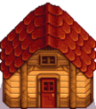

As construções da fazenda são necessárias para abrigar os animais.A construção base deve ser comprado
antes da atualização. Todas essas estruturas podem ser construídas mais de uma vez. Celeiros e Galinheiros
levam 3 dias para serem concluídas; outras estruturas precisam de 2 dias.
Recomenda-se a construção de um
silo primeiro, a fim de recolher e armazenar feno suficiente para alimentar os animais todos os dias.
| Foto | Nome | Custo | Espaço | Número de animais | Abriga |
|---|---|---|---|---|---|
| Celeiro |
ouros (6 000) Madeira (350) Pedra (150) |
Total: 7x4 | 4 animais | Vacas | |
| Celeiro Grande |
ouros (12 000) Madeira (450) Pedra (200) |
Total: 7x4 | 8 animais | Cabras | |
 |
Celeiro de Luxo |
ouros (25 000) Madeira (550) Pedra (300) |
Total: 7x4 | 12 animais | Ovelhas e Porcos |
 |
Galinheiro |
ouros (4 000) Madeira (300) Pedra (100) |
Total: 6x3 | 4 animais | Galinhas |
| Galinheiro Grande |
ouros (10 000) Madeira (350) Pedra (150) |
Total: 6x3 | 8 animais | Patos | |
| Galinheiro de Luxo |
ouros (20 000) Madeira (500) Pedra (200) |
Total: 6x3 | 12 animais | Coelhos | |
| Silo |
ouros (100) Argila (10) Pedra (100) Barra de cobre(5) |
Total: 3x3 | 240 fenos | Feno | |
 |
Lago de Peixes |
ouros (5 000) Algas Marinhas (5) Algas Verdes (5) Pedra (200) |
Total: 5x5 | Peixes se multiplicam com o tempo | Peixes |
| Estábulo |
ouros (10 000) Madeira de Lei (100) Barra de ferro (5) |
Total: 4x2 | Permite um cavalo | Cavalo | |
|  | Galpão |
ouros (15 000) Madeira (300) |
Total: 7x3 | Uma construção vazia | Ocupe-a com o que quiser |
| Galpão Grande |
ouros (20 000) Madeira (550) Pedra (300) |
Total: 7x3 | Dobra o tamanho do galpão | Ocupe-a com o que quiser |